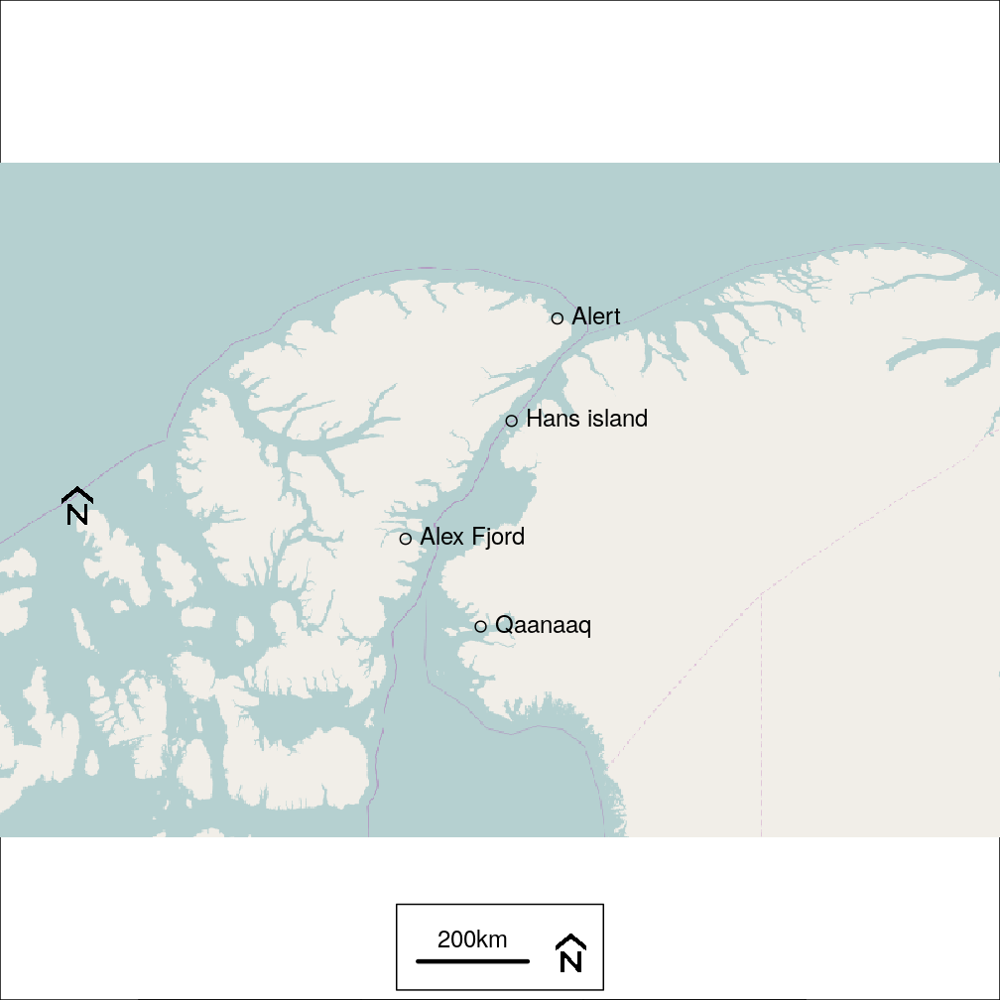
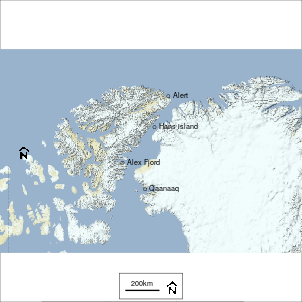
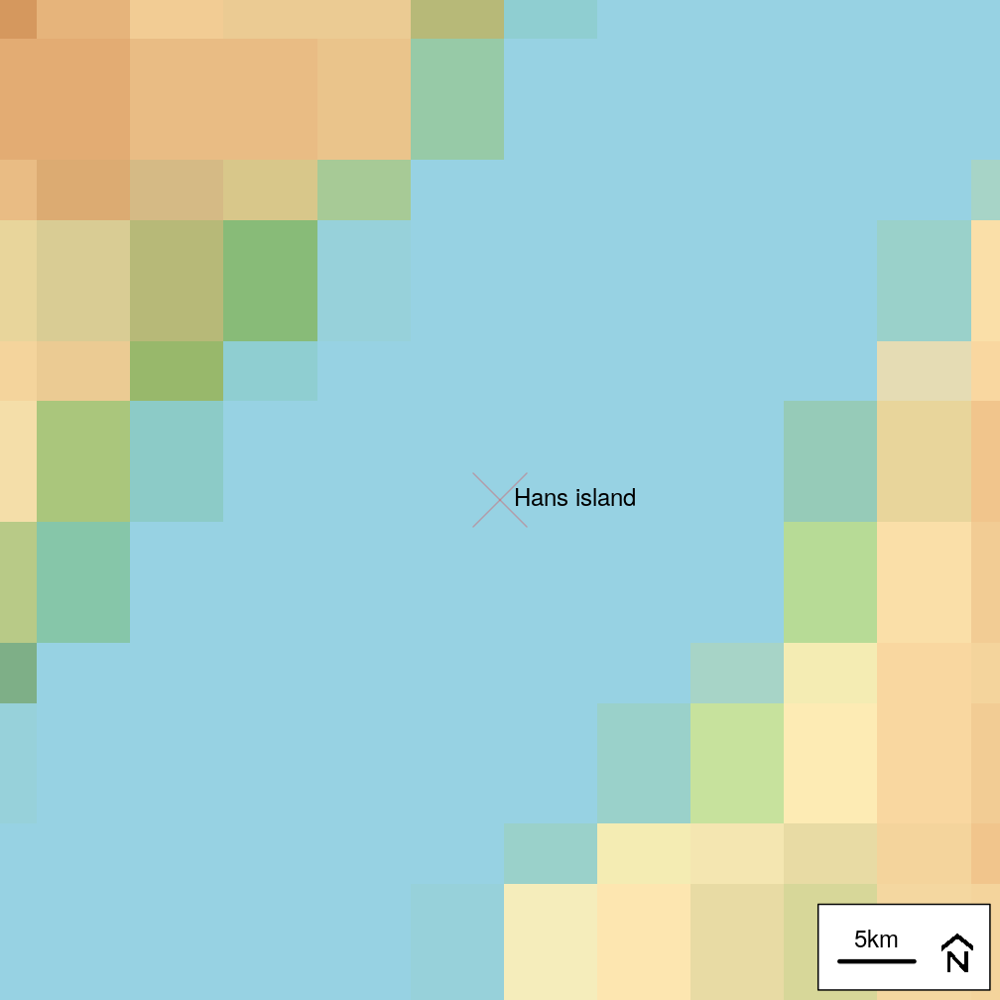
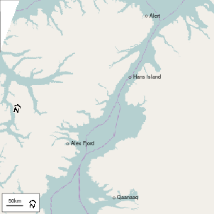
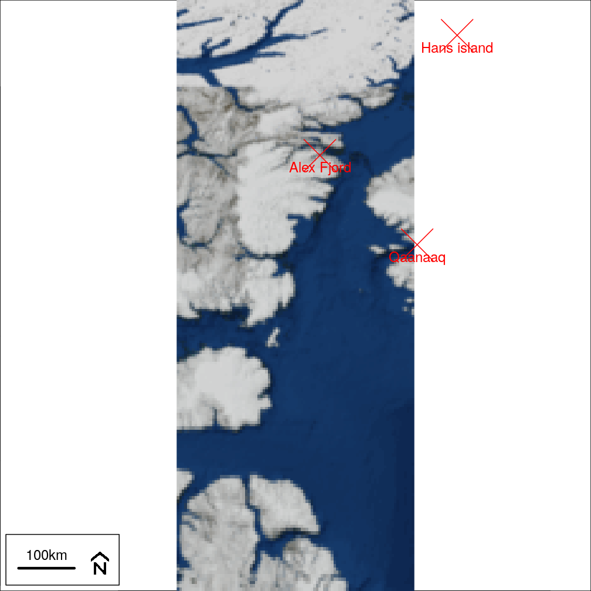
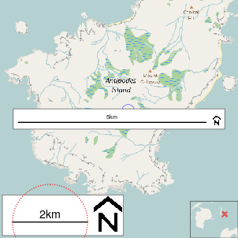
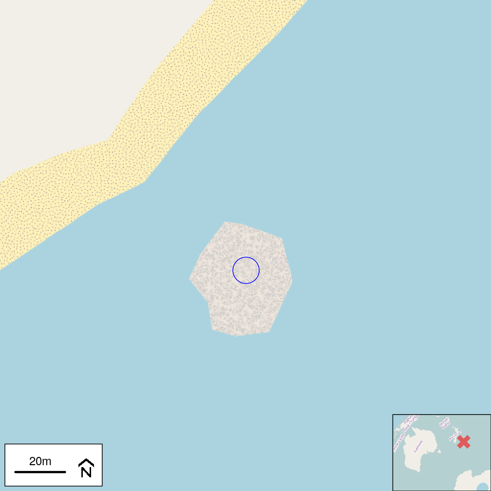
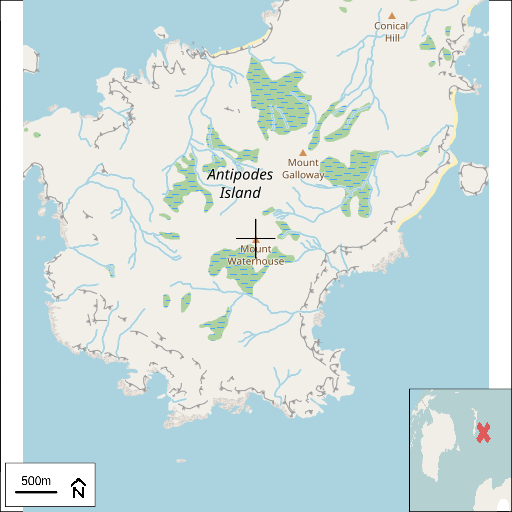
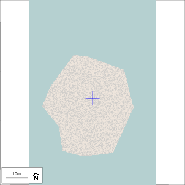

This document will be incomplete if rgdal is unavailable or there is on internet connection when this document is compiled. The full document is at diseasemapping.r-forge.r-project.org.
coords = rbind(Alert = c(-62.338889, 82.501389),
Qaanaaq = c(-69.238685,77.466335),
'Alex Fjord' = c(-75.999722, 78.9),
'Hans island' = c(-66.459722, 80.828056)
)
x = SpatialPointsDataFrame(
coords,
data=data.frame(name=rownames(coords)),
proj4string=crsLL
)if(haveRgdal){
map = openmap(x, path='osm-no-labels', maxTiles=12, buffer=c(30,3), fact=fact)
map.new(map)
plot(map,add=TRUE)
points(x)
text(x, label=x$name, pos=4)
scaleBar(x, 'bottom')
scaleBar(x, 'left', seg.len=0, bty='n')
}
if(haveRgdal){
mapSat = openmap(x, path='opentopomap', maxTiles=4, buffer=c(30,3), fact=fact)
map.new(mapSat)
plot(mapSat,add=TRUE)
points(x)
text(x, label=x$name, pos=4)
scaleBar(x, 'bottom')
scaleBar(x, 'left', seg.len=0, bty='n')
}
if(haveRgdal){
mapSat = openmap(x=x[x$name=='Hans island',],
path='opentopomap', fact=fact,
buffer=c(4,1), zoom=2)
map.new(x[x$name=='Hans island',], buffer=0.3)
plot(mapSat,add=TRUE)
points(x, pch=4, col='#FF000040', cex=5)
text(x, label=x$name, pos=4)
scaleBar(x, 'bottomright')
}
if(haveRgdal){
xMerc = spTransform(x, omerc(x))
mapMerc = openmap(xMerc, path='osm-no-labels',
zoom=3, fact=fact,
maxTiles=12, buffer=c(50,200)*1000)
map.new(xMerc, buffer=50000)
plot(mapMerc,add=TRUE)
points(xMerc)
text(xMerc, label=xMerc$name, pos=4)
scaleBar(xMerc, 'bottomleft')
scaleBar(xMerc, 'left', seg.len=0, bty='n')
}
if(haveRgdal & FALSE){
xOmerc = spTransform(x, omerc(x,angle=5))
map = openmap(xOmerc,
path=c(
'osm-no-labels',
'stamen-terrain-labels'),
fact=fact, maxTiles=12,
buffer=c(2,10,10,0)*100*1000)
mapText = rgbtToIndex(map,
pattern='stamen.terrain.labels')
map.new(map)
raster::plot(map[['osm.no.labels']], add=TRUE)
gridlinesWrap(crs=map, easts=seq(-180,0,by=2), col='red')
plot(mapText,add=TRUE)
points(xOmerc)
text(xOmerc, label=xOmerc$name, pos=4)
scaleBar(xOmerc, 'bottom', bg='white')
scaleBar(xOmerc, 'left', seg.len=0, bty='n')
}if(haveRgdal){
map = openmap(x[x$name=='Alex Fjord',],
path='maptoolkit', zoom=3, fact=fact,
buffer=c(5,5,2,1))
map.new(map)
plot(map, add=TRUE)
points(x, pch=4, col='red', cex=5)
text(x, label=x$name, pos=1, col='red')
scaleBar(x, 'bottomleft')
}
Check to see that Mount Waterhouse and a rocky island are correctly positioned
waterhouseLL = SpatialPoints(
cbind(x=178.7729285, y=-49.6941201),
proj4string=crsLL
)
rockLL = SpatialPoints(
cbind(x=178.80112, y=-49.69171),
proj4string=crsLL
)
if(haveRgdal) {
waterhouseMerc <- spTransform(waterhouseLL, crsMerc)
rockMerc = spTransform(rockLL, crsMerc)
}if(haveRgdal){
waterhouseWrap = spTransform(
waterhouseMerc, moll(waterhouseMerc, angle=25)
)
southInset = openmap(x=waterhouseWrap,
path='osm-no-labels', fact=fact,
buffer=c(4,1,2,1)*1000*1000)
} else {
southInset = openmap(waterhouseMerc,
path='osm-no-labels', fact=fact,
buffer=c(4,0,0,1.5)*1000*1000,
crs=NA)
}Red circle has radius 1km.
mapMerc = openmap(waterhouseMerc, buffer=4000, crs=NA)
map.new(mapMerc)
plot(mapMerc, add=TRUE)
points(waterhouseMerc, col='blue', cex=5)
insetMap(crs=mapMerc,
pos='bottomright',
map=southInset, cropInset = NULL,
lty=0)
#scaleBar(crs=mapMerc, seg.len=35, pos='center')
sRes = scaleBar(mapMerc, 'bottomleft', cex=2)
scaleCentre = SpatialPoints(
cbind(Re(sRes$out$textxy), Im(sRes$out$textxy)),
proj4string=crs(mapMerc))
if(haveRgdal & require('geosphere', quietly=TRUE)){
scaleCentre = spTransform(
scaleCentre,
crsLL
)
circle = SpatialPoints(
geosphere::destPoint(
scaleCentre@coords,
seq(0,360,len=100),
1000
),
proj4string = crsLL)
circle = spTransform(circle, crs(mapMerc))
points(circle, cex=0.3, col='red')
}
mapMercFine = openmap(rockMerc, buffer=100, crs=NA)
map.new(mapMercFine)
plot(mapMercFine, add=TRUE)
points(rockMerc, col='blue',cex=5)
if(haveRgdal) {
insetMap(crs=mapMercFine,
pos='bottomright',
map=southInset, cropInset = NULL,
lty=0)
scaleBar(mapMercFine, 'bottomleft')
}
if(haveRgdal) {
mapLL = openmap(waterhouseLL, buffer=0.02, fact=fact)
map.new(mapLL)
plot(mapLL, add=TRUE, maxpixels = 10^6)
points(waterhouseLL, pch=3, cex=5)
insetMap(crs=mapLL,
pos='bottomright',
map=southInset, cropInset = NULL,
lty=0)
scaleBar(mapLL, 'bottomleft')
}
if(haveRgdal) {
mapLLfine = openmap(rockLL, zoom=19, fact=fact, buffer=0.0002)
map.new(mapLLfine)
plot(mapLLfine, add=TRUE)
points(rockLL, col='blue', pch=3, cex=5)
scaleBar(mapLL, 'bottomleft')
}